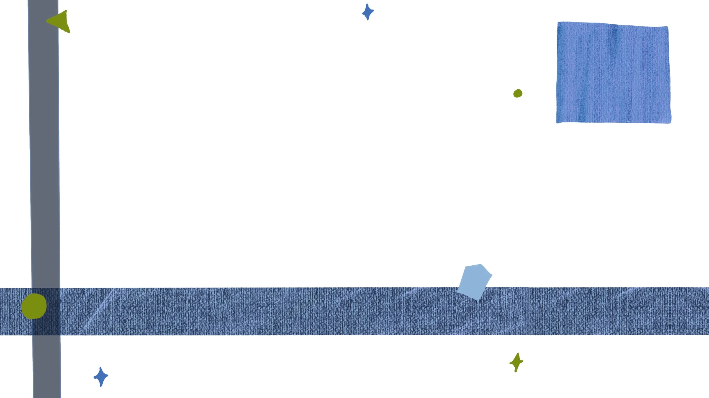
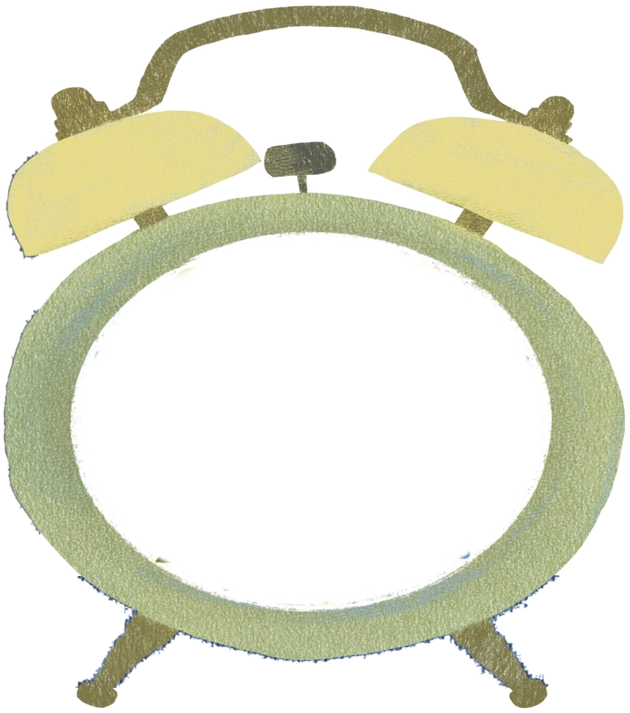

At zero, we expect a safe arrival; at ten, a happy childhood; at twenty,
success in our studies; at thirty, a place to belong; at forty, a thriving
career; at fifty, a settled home and family… Time is divided into neat
marks, and each age slowly takes on the shape it is supposed to have.
People always say there is a right thing to do at every age. But what if
life isn’t a clock that must run on time?